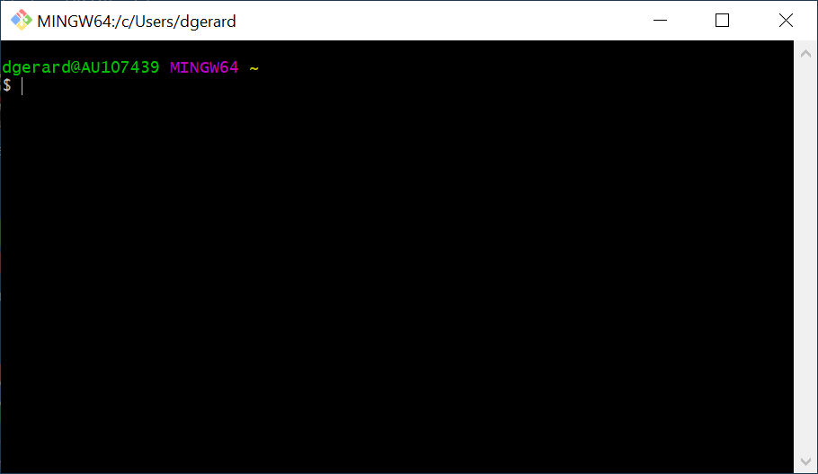
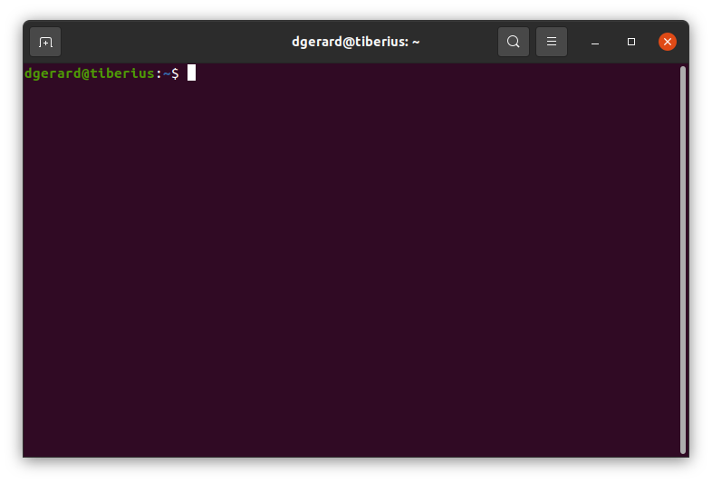

pwd/Users/dgerard/Library/CloudStorage/Dropbox/teaching/stat_413_613/lectures/01_gitThe command line is like the R command prompt: you insert code, hit enter, and then the computer executes your command.
However, instead of inserting R code, you insert Shell Script.
In this class, we will use the command line primarily for two things:
Other words for command line: shell, terminal, command line interface (cli), and console.
There are many types of shells, each with their own scripting language. We will use the bash scripting language for this class.
A huge difference between R and bash is how commands/functions are called.
f(x, y = 1)f x --y=1f x -g would incorporate the g flag.If you are using Linux or Mac, then you can keep going. If you are using Windows, you need to first download and install git (and thus git bash) from here: http://git-scm.com/download/win. You might need to restart R Studio if you are already running it.
Open up the terminal
Windows: Open up the Git Bash app. It should look like this:

Mac: On your Mac, do one of the following:
Ubuntu: Do one of the following
Open the dash and search for “terminal”. Open up the terminal.
Use keyboard shortcut: Ctrl+Alt+T
It should look like this:

All commands get placed after the dollar sign.
The path before the dollar sign is the working directory of the terminal, not R’s working directory. It’s where the shell will reference all files from.
The tilde “~” is shorthand for the “home directory”. Each computer has a home directory that is the “default directory”.
pwd: Print working directory. Show the current working directory. This is like getwd() in R.
pwd/Users/dgerard/Library/CloudStorage/Dropbox/teaching/stat_413_613/lectures/01_gitls: List the current files and folders in a directory.
ls01_basic_bash.qmd
01_basic_bash.rmarkdown
01_figs
01_git_github.qmd
01_git_lfs.qmd
01_git_setup.qmd
blischak_etal_2016.PDF
citation.bibcd: Change directories. This is like setwd() in R. As when we specified paths in R, using two periods mean “move back a folder”.
cd ../
pwd/Users/dgerard/Library/CloudStorage/Dropbox/teaching/stat_413_613/lecturesIf you use cd without specifying a folder to move to, it will move the working directory to the home directory.
cd
pwd/Users/dgerardOK, I’m going to move us back to the 01_git directory.
cd ./Dropbox/teaching/data_496_696/lectures/01_gitman: Read the manual of a command. Just like help() in R.
man lsThis will open up the man page of ls. You can scroll through this page using the up and down arrows. You can exit this page by typing q.
This won’t work for Git Bash (for Windows users). Instead, you’ll need to type
ls --helpExercise: What is your home directory? What files/folders exist in your home directory? Navigate to it and then navigate back to your notes.
Exercise: Where does the following command take you? How does it work?
cd ~/../../..Exercise: Read the manual page of ls. What does the a flag do? Try it out!
touch: Create an empty file.
touch empty_file.txtmore: Open up a preview of a document. You can exit the preview by typeing q.
more 01_basic_bash.Rmdcp: Copy a file.
cp 01_basic_bash.Rmd hellobash.Rmd
lscp: 01_basic_bash.Rmd: No such file or directory
01_basic_bash.qmd
01_basic_bash.rmarkdown
01_figs
01_git_github.qmd
01_git_lfs.qmd
01_git_setup.qmd
blischak_etal_2016.PDF
citation.bibmv: Move/rename a file.
mv hellobash.Rmd goodbyebash.Rmd
lsmv: rename hellobash.Rmd to goodbyebash.Rmd: No such file or directory
01_basic_bash.qmd
01_basic_bash.rmarkdown
01_figs
01_git_github.qmd
01_git_lfs.qmd
01_git_setup.qmd
blischak_etal_2016.PDF
citation.bibrm: Remove a file.
rm goodbyebash.Rmd
lsrm: goodbyebash.Rmd: No such file or directory
01_basic_bash.qmd
01_basic_bash.rmarkdown
01_figs
01_git_github.qmd
01_git_lfs.qmd
01_git_setup.qmd
blischak_etal_2016.PDF
citation.bibmkdir: Make a directory/folder.
mkdir tempdir
ls01_basic_bash.qmd
01_basic_bash.rmarkdown
01_figs
01_git_github.qmd
01_git_lfs.qmd
01_git_setup.qmd
blischak_etal_2016.PDF
citation.bib
tempdirrmdir: Remove a directory/folder.
rmdir tempdir
ls01_basic_bash.qmd
01_basic_bash.rmarkdown
01_figs
01_git_github.qmd
01_git_lfs.qmd
01_git_setup.qmd
blischak_etal_2016.PDF
citation.bibgrepFind any string in any file in the current working directory (or subdirectories or the current working directory).
-r recursive-n line number-w whole word only-e patternpdfgrep (need to install separately) for searching text in PDFs.grep -rnw -e "move"./.Rhistory:2:grep -rnwe "move"
./01_basic_bash.qmd:93: paths in R, using two periods mean "move back a folder".
./01_basic_bash.qmd:98: - If you use `cd` without specifying a folder to move to, it will move the
./01_basic_bash.qmd:104: - OK, I'm going to move us back to the 01_git directory.
./01_basic_bash.qmd:192:grep -rnw -e "move"
./01_basic_bash.rmarkdown:93: paths in R, using two periods mean "move back a folder".
./01_basic_bash.rmarkdown:98: - If you use `cd` without specifying a folder to move to, it will move the
./01_basic_bash.rmarkdown:104: - OK, I'm going to move us back to the 01_git directory.
./01_basic_bash.rmarkdown:192:grep -rnw -e "move"
./01_git_github.qmd:64:- You can go back to previous versions of your code/text, then move forward to
./01_git_github.qmd:221:- Then move into your new repogrep -rnw -e "mov"./01_basic_bash.qmd:196:grep -rnw -e "mov"
./01_basic_bash.qmd:200:grep -rn -e "mov"
./01_basic_bash.rmarkdown:196:grep -rnw -e "mov"
./01_basic_bash.rmarkdown:200:grep -rn -e "mov"grep -rn -e "mov"./.Rhistory:2:grep -rnwe "move"
./.Rhistory:9:conda_remove(envname = "r-reticulate")
./.Rhistory:11:conda_remove("bs4")
./01_basic_bash.qmd:93: paths in R, using two periods mean "move back a folder".
./01_basic_bash.qmd:98: - If you use `cd` without specifying a folder to move to, it will move the
./01_basic_bash.qmd:104: - OK, I'm going to move us back to the 01_git directory.
./01_basic_bash.qmd:160:- `rm`: Remove a file.
./01_basic_bash.qmd:174:- `rmdir`: Remove a directory/folder.
./01_basic_bash.qmd:192:grep -rnw -e "move"
./01_basic_bash.qmd:196:grep -rnw -e "mov"
./01_basic_bash.qmd:200:grep -rn -e "mov"
./01_basic_bash.qmd:225:I'll remove that file now
./01_basic_bash.rmarkdown:93: paths in R, using two periods mean "move back a folder".
./01_basic_bash.rmarkdown:98: - If you use `cd` without specifying a folder to move to, it will move the
./01_basic_bash.rmarkdown:104: - OK, I'm going to move us back to the 01_git directory.
./01_basic_bash.rmarkdown:160:- `rm`: Remove a file.
./01_basic_bash.rmarkdown:174:- `rmdir`: Remove a directory/folder.
./01_basic_bash.rmarkdown:192:grep -rnw -e "move"
./01_basic_bash.rmarkdown:196:grep -rnw -e "mov"
./01_basic_bash.rmarkdown:200:grep -rn -e "mov"
./01_basic_bash.rmarkdown:225:I'll remove that file now
./01_git_github.qmd:64:- You can go back to previous versions of your code/text, then move forward to
./01_git_github.qmd:221:- Then move into your new repo
./01_git_github.qmd:394:- Lines after a "`+`" are being added. Lines after a "`-`" are being removed.wgetNon-interactive downloading of data.
Not available for Git Bash for Windows.
-nc Don’t download new copies if already there.-nd Put all files in current working directory.-P Tell where to download the files. Default is current working directory (.)-r Recursive downloading. Download all files in the directory up to a certain level.l Determine the level for recursive downloading.E.g. to download the HTML file that contains the Wikipedia list of theological demons, we can go
wget -nc -nd https://en.wikipedia.org/wiki/List_of_theological_demons--2025-06-03 10:27:27-- https://en.wikipedia.org/wiki/List_of_theological_demons
Resolving en.wikipedia.org (en.wikipedia.org)... 208.80.154.224
Connecting to en.wikipedia.org (en.wikipedia.org)|208.80.154.224|:443... connected.
HTTP request sent, awaiting response... 200 OK
Length: 105011 (103K) [text/html]
Saving to: ‘List_of_theological_demons’
0K .......... .......... .......... .......... .......... 48% 1.02M 0s
50K .......... .......... .......... .......... .......... 97% 2.96M 0s
100K .. 100% 51.0K=0.06s
2025-06-03 10:27:27 (1.55 MB/s) - ‘List_of_theological_demons’ saved [105011/105011]ls01_basic_bash.qmd
01_basic_bash.rmarkdown
01_figs
01_git_github.qmd
01_git_lfs.qmd
01_git_setup.qmd
blischak_etal_2016.PDF
citation.bib
List_of_theological_demonsI’ll remove that file now
rm List_of_theological_demonsreverse-i-searchctrl+r to get search promptctrl+r to cycle through matchesenter if you want to reuse the match. Hit ctrl+c to exit out of the search.